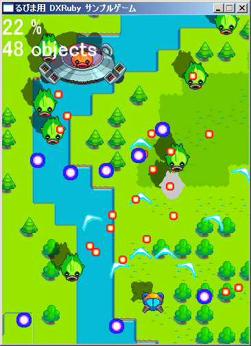

Ruby から DirectX を扱う簡単高速ゲームライブラリ DXRuby の紹介
著者：mirichi 編集：くげ
DXRuby とは
:
DXRuby とは、Ruby で Windows 用の 2D ゲームを作るための拡張ライブラリです。
難しいことを一切排除した簡潔な構成になっていますので、ゲーム開発初心者の方でも悩むことなく簡単に扱うことができます。 また、ライブラリ自体は C 言語で直接 DirectX を制御するように書かれているため、動作は非常に高速です。 DXRuby を使うことによって、 Ruby で簡単・高速な本格的アクションゲームを作ることが可能となります。
本稿では、DXRuby とその具体的な使い方について紹介します。
- DXRuby 公式サイト
- DXRuby
- DXRuby ダウンロードページ
- http://sourceforge.jp/projects/dxruby/releases/
DXRubyが生まれた背景と狙い
みなさんご存知かと思いますが、Ruby は EnjoyProgramming を掲げており、気軽なプログラミングを楽しもう、という考え方が大きな特徴です。 そんな Ruby でゲームプログラミングができたら楽しいだろうなあ……と思い、いまから約 4 年前に DXRuby の開発に着手しました。
いまなら Ruby/SDL を扱う MyGame や Miyako、それから、直接 SDL を扱う Rubygame、gosu、StarRuby など、ほんとにたくさんのゲーム用ライブラリがありますが、当時は Ruby/SDL が出てきたかな？ぐらいでした。 当時の PC ではスクリプト言語である Ruby はゲーム用途にはイマイチ遅かったですし、「 Ruby から DirectX を扱う」という一点に特化した高速なゲームプログラミングのライブラリが欲しいなという思いから DXRuby の開発を始めました。
ところが、SourceForge.jp に DXRuby と一緒にアップしてあるサンプルシューティングゲームが動くところまで完成した後、諸々の事情で忙しくなったため、そのままほったらかしになってしまいました。最近ヒマになったので、昔作った DXRuby を引っ張り出していじってみたところ、「これはひょっとしたら今でも通用するんじゃないか？っていうか、むしろ PC が速くなった今だからこそ、Ruby ゲームプログラミングが現実的になってるのでは？」と思ったので、2009 年 4 月に思い切ってリリースしてみました。
DXRuby は EnjoyProgramming の Ruby から、気軽に DirectX を扱うことができるように作られた EnjoyGameProgramming のゲームライブラリです。 なるべく簡単に使うことができるよう、クラス/メソッドをシンプルな構成にしていますし、気軽に作ったゲームがそこそこ動くように動作速度には特に気を配っています。 基本的な位置づけはゲーム開発初心者向けのライブラリですので、Ruby と DXRuby で気軽にチャレンジしゲーム作りが楽しいものであると感じてもらえれば幸いです。
環境の構築
DXRuby を動作させるための環境について説明します。
arton 氏の ActiveScriptRuby では、1.8.7-p173 以降のバージョンに DXRuby1.0.4 が同梱されていますので、こちらを利用してる方は DXRuby の個別インストールは不要です。 それ以外の i386-mswin32 版をご利用の方は、SourceForge.jp の DXRuby のダウンロードページからダウンロードして、インストールしてください。
また、DXRuby どころか Ruby もインストールしてない方や、Windows でも cygwin 環境でお使いの方は、i386-mswin32 版 Ruby インタプリタと DXRuby をまとめて exe 化した DXRuby スターターキットも用意しております。 DXRuby スターターキットは DXRuby プロジェクト Web で配布してますので、サンプルコードを動かしたい方はダウンロードしてお試しください。
あと、重要な点ですが、前提として DirectX 9 以降がインストールされている必要があります。
なお、この記事で紹介しているサンプルコードは、Ruby1.8.7-p174 (i386-mswin32)、Ruby1.9.1-p129 (i386-mswin32) と、それぞれのバージョンに対応した DXRuby 1.0.4 で動作確認を行っています。
簡単なサンプル
とりあえず、簡単なサンプルプログラムを挙げてみましょう。
{kind=link}
require 'dxruby'
x = 0 # x座標の変数
y = 0 # y座標の変数
image = Image.load('data.png') # data.pngを読み込む (1)
Window.loop do # メインループ (2)
x = x + Input.x # 横方向の入力でx座標を変更 (3)
y = y + Input.y # 縦方向の入力でy座標を変更
Window.draw(x, y, image) # data.pngを座標の位置に表示 (4)
break if Input.keyPush?(K_ESCAPE) # Escキーで終了 (5)
end
このプログラムを実行すると、data.png を読み込んで表示し、カーソルキーで動かすことができます。また、Esc キーを押すかウィンドウを閉じることで終了します。
ではこのコードを簡単に説明しましょう。
- (1) 画像の読み込み
- (1) では画像を読み込んでいます。DXRuby では、画像をプログラムで生成することもできますが (同梱のサンプルではほぼ全て生成しています)、普通に画像ファイルから読み込むこともできます。画像データは Image クラスのオブジェクトとして表現されます。
- (2) メインループ
- (2) はゲームのメインループです。Window.loop を実行した時点でウィンドウが表示されて、ループを抜けると消えます。このループ内にゲームのメイン処理を全て書くことになります。
- (3) キー入力
- (3) ではキー入力の処理を行っています。Input モジュールにはキーやマウス、パッドの入力用メソッドが実装されおり、いろいろな入力を簡単に取得することができます。キーやボタン単体での入力も可能ですが、キャラの移動用に Input.x、Input.y という特別に簡単なメソッドが用意されています。それぞれ x 座標の増分、y 座標の増分で返します。左・上を押した場合は -1、右・下は 1、押していなければ 0 です。
- (4) 画像の描画
- (4) ではウィンドウへの画像描画を行っています。Window モジュールにはこのような描画系メソッドが色々と実装されていて、回転や拡大縮小、各種合成描画などが簡単にできます。DXRuby は、この描画系メソッドの実行が高速であることがウリの一つです。
- (5) ループの終了条件
- 最後に、(5) がループの終了条件となります。ここでは Esc キーが終了条件となっていますが、Window.loop メソッドはウィンドウを閉じても自動的に終了します。
Ruby は高度な記述もできる本格的な言語ですが、DXRuby では簡単なものであればクラス定義をすることもなくゲームを作ることが可能です。 実際、DXRuby 同梱のサンプルプログラムは全て手続き的な記述になっています。 Ruby の簡単さを重視し、Ruby 初心者でもゲームプログラムにチャレンジしてもらえるように、との思いからこのような作りにしました。 もちろん、作れる人はクラスライブラリを構築して頂いて構いませんし、できれば公開なんかもしてもらえれば、もっと世界が広がるかと思います。
DXRuby の構成
DXRuby がサポートするのは下記に挙げたようなハードウェア・OS 関連のクラス / モジュールだけで、ゲームのフレームワークやアルゴリズムは提供しません。ゲームを作る場合に最も厄介なのがハードウェア・OS 関連の処理であり、最も楽しいのがゲームのアルゴリズム作成だと考えているからです。
DXRuby のクラス / モジュールについて簡単に紹介します。
| クラス名 | 説明 |
|---|---|
| Window モジュール | メインウィンドウとゲーム全体の制御、描画を行います。 |
| Input モジュール | キーボード、マウス、ゲームパッドの入力を行います。 |
| Image クラス | 画像の読み込みや編集ができる画像データのクラスです。 |
| Sound クラス | wav ファイルと midi ファイルの読み込み、再生ができる音のクラスです。 |
| Font クラス | 文字描画のフォントを表現するクラスです。 |
| SoundEffect クラス | ファミコン的な音をプログラムで生成、再生できる音のクラスです。 |
特別ややこしい仕組みを作りこんでるわけではありませんが、描画まわりだけは少しいじってあります。
Window.draw 系メソッドを呼び出すと、各種パラメータが登録されるだけでその場では描画されず、Window.loop のループ時にウェイト・ソート・描画処理がまとめて行われます。 この方法の利点は、ライブラリ側で描画順の高速ソートができることと、フレームスキップの効率化です。 逆に動作速度が多少落ちますが、手軽さなどの方を取りました。手軽にゲームが作れるというのが DXRuby の最大のポイントであり、開発の方針だからです。 また、Image クラスは画像を読み込むだけではなく、画像間のコピーや画像を直接編集するメソッドなどを用意してあります。
あとはだいたい DirectX のラッパのような感じです。 ただ SoundEffect だけは激しく例外で、これについてはこの後に紹介するサンプルゲームで実際に使用しているので、そこで具体的な説明をします。
サンプルゲームによる詳細解説
: 
もう少しまともに動作するシューティングゲームのサンプルコードを参考にして、詳細な解説を行います。
きちんとした作品にはなっていませんが、それなりに細かいところまで作りこんでありますので、DXRuby の使い方や、ゲームを作る場合の大まかなアルゴリズムの参考になるかと思います。 ただし、このサンプルゲームがどのように動いているのかを要点に絞って解説するため、細かなアルゴリズムまでは説明しません。
また、このサンプルではタイトル画面や、自機のやられ処理、ゲームオーバー、スコア、敵出現のパターン化、ボスキャラなどは作っておりません。
そのあたりの処理は、以下の記事を参考にしてみてください。
- Ruby/SDLで始めるゲームプログラミング【前編】
- Ruby/SDL で始めるゲームプログラミング【後編】
- DXRuby のプロジェクトWiki (まだそれに関する記事はありませんが)
サンプルファイル 1 をダウンロードして展開後、game.exe を実行するとサンプルゲームが起動します。 自機の移動は十字キー、弾を発射は Z キー、ゲームの終了は ESC キーです。
DXRuby スターターキットを使っていますので、mswin32 版 Ruby や、DXRuby がインストールされてなくても、Windows と DirectX 9 があれば動きます。
全体の仕組みと流れ
このサンプルは、なるべく簡単な記述で作れるように、かなりベタな作りになっています。 具体的にはメインループが一つと、各種キャラのクラスがキャラの種類の数だけ定義されています。 クラスの継承などはしていませんので、そのクラスの定義だけ見れば何をやっているのかは全てわかります。 このあたりはサンプルとして説明をわかりやすくするためにあえてそうしていますので、みなさんが自分で作るときはもっとラクに作れるように、基底クラスを定義して継承するなどしてみてくださいね。
ゲーム全体の仕組みとしては、ObjectGroup 配列に、画面上のキャラを全て突っ込んで、each で回して動かしているだけです。 それぞれのクラスには update と draw のメソッドが定義されていますので、それを呼び出して移動させ描画するという、とてもシンプルな構成です。
Window.caption = "るびま用 DXRuby サンプルゲーム" # ウィンドウのキャプション設定
Window.width = 360 # ウィンドウの横サイズ設定
Window.height = 480 # ウィンドウの縦サイズ設定
Input.setRepeat(0, 5) # キーのオートリピート設定。5 フレームに 1 回 on
ObjectGroup = [] # オブジェクト配列
Collision_MyShot = [] # 弾の判定範囲配列
Collision_Enemy = [] # 敵の判定範囲配列
Collision_EnemyShot = [] # 敵の弾の判定範囲配列
count = 0 # 敵出現処理用カウント
font = Font.new(32) # フォント生成
$myship = MyShip.new # 自機生成
ObjectGroup.push($myship) # 自機をオブジェクト配列に追加
ObjectGroup.push(Map.new) # 背景オブジェクト生成＆オブジェクト配列に追加
# メインループ
Window.loop do
# 敵出現処理
count += 1
if count % 20 == 0 # 20 カウントに 1 回
if count % 400 == 0 # 400 カウントに 1 回
# 敵 2 のオブジェクト生成＆オブジェクト配列に追加
ObjectGroup.push(Enemy2.new(rand(240), -64))
count = 0
else
# 敵 1 のオブジェクト生成＆オブジェクト配列に追加
ObjectGroup.push(Enemy1.new(rand(320), -48))
end
end
# オブジェクト情報更新
ObjectGroup.each do |obj|
obj.update
end
# 衝突判定
Collision.check(Collision_MyShot, Collision_Enemy) # 自機ショットと敵
Collision.check(Collision_EnemyShot, $myship.collision) # 敵ショットと自機
# 衝突判定配列初期化
Collision_MyShot.clear
Collision_Enemy.clear
Collision_EnemyShot.clear
# 移動や衝突判定で消えたキャラを配列から削除
ObjectGroup.delete_if do |obj|
obj.delete
end
# オブジェクトを描画
ObjectGroup.each do |obj|
obj.draw
end
# Esc キーで終了
break if Input.keyPush?(K_ESCAPE)
# 各種情報出力
Window.drawFont(0, 0, Window.getLoad.to_i.to_s + " %", font, :z => 100)
Window.drawFont(0, 32, ObjectGroup.size.to_s + " objects", font, :z => 100)
end
初期化処理
メインループに入るまでの部分で初期化処理をしています。 一番上のところで「ウィンドウのタイトル設定」「ウィンドウのサイズ設定」「ショット用のキーオートリピート設定」を行っています。
次の配列は、ObjectGroup には全キャラが入り、ここに入っているオブジェクトについて update と draw が呼ばれることになります。 その他の 3 つは衝突判定用で、自機の弾と、敵と、敵の弾の衝突判定オブジェクトを、update メソッドの中でここに追加していきます。あとでこの配列を使って衝突判定を行います。 font は DXRuby で文字を描画するときに使うフォントオブジェクトとなっています。Font クラスは new の第 2 引数でフォント名を指定することができ、省略すると MS ゴシックとなります。
メインループ直前では、ObjectGroup 配列に自機と背景のオブジェクトを追加しています。 自機がグローバル変数なのは、敵の狙い弾などで自機の座標を手軽に取得するためで、グローバル変数にしないとダメということではありません。
メインループ
メインループでは、敵出現 (適当な間隔で敵オブジェクトを new して ObjectGroup 配列に push する) 、オブジェクトの情報更新 (each して update) 、衝突判定、配列から削除、描画 (each して draw) と、終了条件による break、負荷などの表示を行っています。
あまりにもシンプルで説明するところがありませんが、強いて言うなら衝突判定のあたりでしょうか。 このサンプルゲームでは、衝突判定オブジェクトの配列を 2 つ渡すとそのオブジェクト同士の判定を行い、当たったオブジェクトのメソッドを呼ぶような処理が Collision モジュールとして作ってあります。 メソッドを呼ばれたオブジェクトは、例えば敵なら HP を減らし、0 になった時点でやられパターンオブジェクトを生成、自分に delete フラグを立てます。 判定のあとの delete_if で、判定中や移動中に消えたキャラを ObjectGroup から削除して、残ったキャラを描画する、という流れです。2
ちなみにこの Collision モジュールと、まだ出てきていませんが判定配列に入れる CollisionBox クラスは今回は Ruby で実装していますが、これをCで実装した DXRubyExtension という追加ライブラリもプロジェクト Web で公開しています。
DXRubyExtension は矩形だけでなく、三角、丸、点の衝突判定もサポートしており、C で書かれているため Ruby で判定するよりかなり高速となっています。 オブジェクト数の多いゲームでは衝突判定はどうしても高負荷になってしまいますが、DXRubyExtension を使うことで負荷を大きく引き下げることができるでしょう。
自機のクラスの説明
メインのロジック以外は全て似たような感じのクラス定義となっています。 例えば自機用の MyShip クラスはこんな感じ。
class MyShip
attr_accessor :x, :y, :collision, :delta_x, :delete
# 画像読み込みと影画像生成
@@image0 = Image.loadToArray("image/myship.png", 4, 1)
@@image1 = Array.new(4) {Image.new(32, 32)}
black = [128, 0, 0, 0]
for i in 0..3
for y in 0..31
for x in 0..31
# 元画像で透明じゃない部分を黒にする
@@image1[i][x, y] = black if @@image0[i][x, y][0] != 0
end
end
end
# ショット音生成
f = 4000
@@sound = SoundEffect.new(20, WAVE_TRI) do # 20ms の三角波を生成する
f = f - 120 # 周波数は 4000Hz から 1ms ごとに 120Hz 下げる
[f, 15] # [ 周波数, 音量 ] の配列を返す
end
# 初期化処理
def initialize
@x = 140 # x 座標
@y = 400 # y 座標
@oldx = 140 # 前フレームのx座標
@delete = false # 自機が消えたときは true
@animecount = 0 # アニメーション用カウント
@collision = CollisionBox.new(nil, 4, 4, 27, 27) # 衝突判定オブジェクト
end
def update
# 移動
dx = Input.x * 2.4
dy = Input.y * 3
if Input.x != 0 and Input.y != 0 # ナナメの時は 0.7 倍
dx *= 0.7
dy *= 0.7
end
@x += dx
@y += dy
# 画面端の判定
@x = 0 if @x < 0
@x = 360 - 32 if @x > 360 - 32
@y = 0 if @y < 0
@y = 480 - 32 if @y > 480 - 32
# 衝突判定範囲の移動
@collision.set(@x, @y)
# ショット
if Input.padPush?(P_BUTTON0)
ObjectGroup.push(MyShot.new(@x - 18, @y - 32, 270))
ObjectGroup.push(MyShot.new(@x + 18, @y - 32, 270))
ObjectGroup.push(MyShot.new(@x + 32, @y - 16, 300))
ObjectGroup.push(MyShot.new(@x - 32, @y - 16, 240))
@@sound.play
end
# 背景や敵などの横補正値計算
@delta_x = -((@x - @oldx) / 5)
@oldx = @x
# アニメーション用カウント
@animecount += 1
@animecount -= 80 if @animecount >= 80
end
# 描画
def draw
Window.draw(@x, @y, @@image0[@animecount / 20], 15) # 自機
Window.draw(@x - 16, @y - 16, @@image1[@animecount / 20], 1) # 影
end
end
初期化処理
メソッド定義の前に、クラス変数を設定する処理が書いてあります。ここで行っているのは「自機の絵の読み込み」「同じ形の影画像生成」「ショット音生成」です。
画像の読み込みは、自機の絵を読み込んで横に 4 分割後、配列に入れるメソッドを呼んでいます。 そして、その画像を元に、自機と同じ形の影画像を生成します。 DXRuby の Image クラスには画像を 1 ピクセル単位で扱う機能がありますので、それを使って全ピクセルの判定を地道に行うというベタな手です。
音の生成
音の生成は SoundEffect クラスでしていまして、これは DXRuby の中でも、というか、Ruby 用のライブラリの中でも極めて異質な機能であると思っています。 簡単に説明すると、音の長さを指定してバッファを生成し、1ms 単位 (変更可能) に「周波数とボリュームを返すブロック」を呼び出すことで、音のバッファを編集します。
このコードでは、20ms の短いショット音を作っています。 周波数ははじめ 4kHz で、1ms ごとに 120Hz 下げています。音量は 15、かなり小さい音にしています。
ショット音で生成される波形は三角波 (ファミコンのベースの音と同じ波形) です。 SoundEffect クラスでは三角波のほかに、矩形波、正弦波、ノコギリ波がサポートされており、ファミコンの音や、もう少し凝った FM 音源に近い音を、プログラムで作り出すことができます。
このサンプルでは使っていませんが、Sound クラスで wav やmidi ファイルを扱えます。また、プロジェクト Web で公開している bass.rb を使えば ogg や mp3 も扱うことができるようになります。
メソッド
MyShip クラスのメソッドは initialize、update、draw の 3 つです。基本的にこのサンプルでは全てのクラスがこの3つのメソッドで成り立っています。
自機は無敵になっていますので、衝突判定モジュールから呼ばれるメソッドはありません。衝突判定の結果が必要なクラスには、hit、shot の名称でメソッドを定義しています。
initialize は Ruby のインスタンス生成時に呼ばれるメソッドですので、ここでインスタンス変数を初期化しています。 @collision に CollisionBox オブジェクトを入れていて、これが衝突判定範囲のオブジェクトとなります。
第 1 引数は nil となっていますが、ここに self を入れると衝突時に hit か shot のメソッドが呼ばれます。自機は呼ばれる必要がないからnilです。 第 2 引数からは、キャラの座標を原点とした左上の点と右下の点の相対位置を指定します。キャラは 32*32 なので、絵のサイズより少し小さい正方形となっているのがわかるでしょう。
update メソッドはメインルーチンから1フレームに1回呼ばれる、移動用のメソッドでしたね。 移動処理は DXRuby の Input モジュールを使い、x と y の増分を取得し、ナナメの場合は 0.7 倍 3 して補正し、@x と @y に足します。その後、画面端との判定処理をしています。 横のほうが移動量の倍率が低くなっているのは、背景を自分の移動に合わせて逆方向にずらしているため、そのぶんだけ移動量を減らす目的です。
CollisionBox オブジェクトの set メソッドは、相対範囲で設定されている衝突判定範囲に足すキャラの原点を設定します。こうした状態で Collision モジュールの check メソッドに渡せば判定してくれる、という仕組みです。 ショットを撃つ判定には Input モジュールの padPush? メソッドを使いますが、パッドのボタン 0 は初期状態ではキーボードの Z キーと関連付けられていますので、パッドが無くても遊べます。
padPush? メソッドは本来は単発の入力を判定するメソッドですが、キーのオートリピートの影響を受けるので、Input.setRepeat メソッドで設定すれば押しっぱなしを連打と判定することができます。
ショットの生成は ObjectGroup 配列に MyShot オブジェクトを追加するだけです。
あとは、背景の横移動に合わせて敵や弾を横に移動させるための変数設定と、アニメーションの処理となっています。
最後は draw メソッドとなっていますが、Window モジュールの draw メソッドを呼び出して画面に自機と影を描画しているだけです。
このようなシューティングの場合、敵の弾を一番手前に描画したいわけですが、DXRuby では描画順をソートする機能 (最後の引数が描画順) があるので、全てを ObjectGroup に入れてしまってまとめて描画させてもうまく描画できます。
処理順を気にする場合は自分で調整する必要があります。
まとめ
このサンプルはごらんのように、仕組みそのものはとてもシンプルになっています。 細かいところを作りこんでみたため、色々な処理が入っていますが、それぞれのクラスは update と draw と shot/hit しかないので、読んでみれば意外に簡単に理解できると思います。 また、これらのコードを見ると、DXRuby のメソッドを呼び出している部分は少ないことに気付くと思います。
ゲームプログラミングはあくまでもそのゲームのアルゴリズム作成がメインであり、ハードウェアにアクセスする部分は枝葉でしかありません。 DXRuby はその枝葉をなるべく少なくすることで、ゲームを作る人がアルゴリズムを作ることに集中できるようにしました。 C で書くとメモリやオブジェクトの管理が大変なところも、Ruby では GC がありますし、オブジェクトは配列に入れてしまえば様々な問題が解決します。
Ruby と DXRuby の組み合わせだと、そういった煩雑で本質と関係ない枝葉の部分をバッサリと切り捨てて、ゲームプログラミングの最も楽しい部分だけを味わうことがができます。
おわりに
本稿では、るびま向けに作成したサンプルとともに、DXRuby の紹介をさせていただきました。
開発が 4 年前なのでちょっと古くなってしまっていますが、当時より PC は速くなっていますし、Ruby もより良くなりました。 Rubyと DXRuby なら、ゲームプログラミング初心者でもゲーム作りにチャレンジできますし、ゲームを作り慣れた人ならほんとに手軽にそこそこのゲームが作れると思います。 当然、ほんとに凄いゲームは C などが最適になりますが、年々速くなる PC、Ruby1.9 での高速化などもあり、すぐに普通のゲームであれば Ruby で十分足りるようになるでしょう。 そのとき、ゲーム開発分野でも Ruby の生産性が大きな武器になるはずです。
たくさんライブラリが出ているにも関わらず、相変わらず Ruby のゲーム分野は盛り上がっていませんが、そこに一石と投じることができればいいな、と思っています。
著者について
- mirichi
- (有) アイシンク所属。
- 趣味はと聞かれるとゲームプログラミングと答えるが、実際にゲームを作ったことはほとんどない。